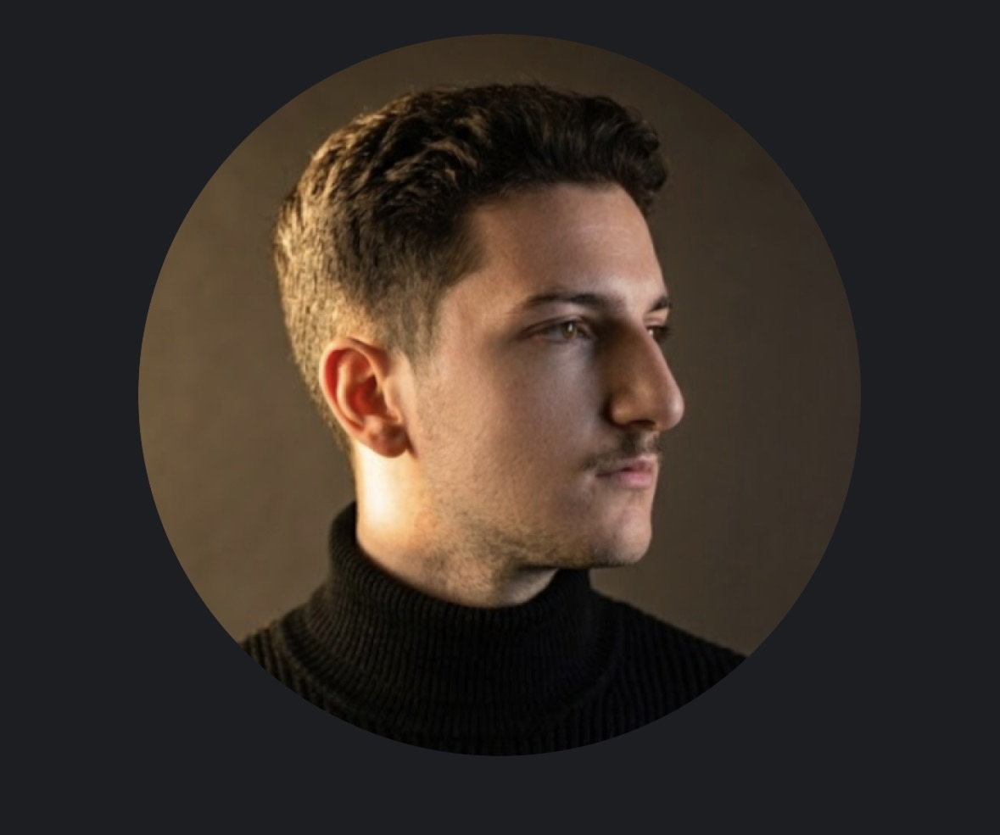

Technicien réseaux & systèmes en alternance, passionné par l'infrastructure, la sécurité et l'administration des systèmes.

01 — À propos
Je suis étudiant en BTS SIO (Services Informatiques aux Organisations), option SISR (Solutions d'Infrastructure, Systèmes et Réseaux) à Keyce Informatique, basé à Nîmes.
Mon parcours est atypique : titulaire d'un Bac Pro Gestion Administration et d'un BTS Comptabilité Gestion réalisé en alternance, j'ai fait le choix de me reconvertir dans l'informatique et les réseaux. Cette expérience en gestion m'apporte une vraie compréhension des environnements professionnels et des besoins métiers — un atout concret pour le support et l'administration système.
En alternance à la Polyclinique du Grand Sud, j'interviens dans un milieu médical exigeant où la fiabilité et la continuité de service sont critiques.
Systèmes
Réseaux & Sécurité
Services & Outils
02 — Projets
École — Infrastructure
Déploiement complet sous Windows Server 2022 en environnement virtualisé (serveur + client Windows 11). Promotion en contrôleur de domaine, configuration AD/DHCP/DNS, GPO, PSO et gestion des droits NTFS par groupes.
Alternance PGS — Déploiement
Migration manuelle de près de 250 postes à la Polyclinique du Grand Sud. Le contexte médical excluait tout déploiement automatisé — une défaillance aurait pu interrompre des services critiques et engager la sécurité des patients.
École — Sécurité réseau
Mise en place de deux instances pfSense en VM pour assurer la redondance du pare-feu LAN. pfSync synchronise les tables d'états en temps réel, garantissant la continuité de service en cas de défaillance.
Alternance PGS — Support
Traitement des incidents via Elsan Pro Proximité : mots de passe, pannes, accès, support logiciel auprès des équipes médicales. Configuration de switches dans un environnement réseau externalisé.
École — Réseau
Plusieurs TP de simulation réseau : VLANs, routage OSPF, Spanning Tree, DHCP/DNS et téléphonie IP sur des topologies représentatives d'environnements professionnels.
Alternance PGS — Administration
Création et configuration de postes et comptes dans l'Active Directory de la PGS. Attribution des droits selon les profils métiers et intégration des machines au domaine.
École — VoIP
Installation et configuration d'un serveur XiVO sur une VM Ubuntu Linux. Mise en place des extensions SIP, configuration des lignes internes et tests de communication entre postes.
Alternance PGS — Qualité
Élaboration de procédures informatiques pour la préparation à la certification HAS. Documentation technique garantissant la conformité aux exigences qualité du secteur médical.
École — Gestion de parc
Déploiement de GLPI pour recenser et gérer le parc informatique. Inventaire des équipements, fiches matérielles et suivi des tickets d'incidents.
École — Sécurité réseau
Configuration de listes de contrôle d'accès pour filtrer et sécuriser les flux réseau entre segments selon les adresses IP et les ports.
École — Infrastructure
Configuration d'un serveur de fichiers partagés avec droits NTFS par groupes et UO. Création des dossiers, attribution des permissions et vérification des accès par profil.
École — Supervision
Exploitation des journaux d'événements pour détecter les anomalies, surveiller les connexions et assurer la traçabilité sur les équipements réseau et serveurs.
École — VoIP
Préparation et planification du déploiement VoIP avec Linphone. Analyse des besoins, architecture cible et rédaction du dossier de projet.
École — Veille
Démarche de veille sur les évolutions réseaux et systèmes. Sélection de sources fiables, suivi des tendances cybersécurité et synthèse des informations collectées.
Alternance PGS — Communication
Contribution à la présence en ligne de la Polyclinique du Grand Sud sur LinkedIn. Création et publication de contenus numériques dans le respect du cadre juridique.
03 — Parcours
Keyce Informatique × Polyclinique du Grand Sud (PGS), Nîmes
Formation en administration systèmes et réseaux en alternance à la Polyclinique du Grand Sud. Déploiement d'infrastructures Windows Server, configuration réseau (Cisco, pfSense), téléphonie IP, et support technique en environnement médical critique.
IFC de Nîmes × Phytocontrol, Nîmes
Formation en comptabilité et gestion réalisée en alternance chez Phytocontrol, laboratoire spécialisé dans l'analyse des résidus de pesticides. Une année supplémentaire exercée en entreprise à l'issue du diplôme.
CCI de Nîmes
Baccalauréat professionnel spécialisé dans la gestion administrative : traitement de l'information, relations clients/fournisseurs et gestion des ressources humaines.
04 — Contact
Tu veux me contacter pour une opportunité, un projet ou simplement échanger ? N'hésite pas à me joindre via les liens ci-dessous.